About
Stephen is a fullstack software developer.
Values are what I'm about. Steadily improving every day, making projects and also publishing technical articles. Also done some open source Contribution. My experiences range from working with backend, cloud and computer networking technologies to frontend technologies. I have a decent knowledge of Linux and even some low-level systems understanding like writing network sockets in C.
Skills
- Testing: Jest, Vitest, Pytest, Locust, React Testing Library
- Web Servers: NGINX, Gunicorn, Apache.
- CI/CD: GitHub Actions
- Process Management: PM2 and supervisor
- Databases: MongoDB, MYSQL, PostgreSQL
- SSL/TLS encryption: Certbot, Let's Encrypt, cloudfront, ACM
- API Testing: Curl and Postman.
- Virtualization: Docker, Virtual Machines, AWS(EC2)
- Basic Networking: Linux CLI, SSH
- Cloud: AWS(S3, EC2, lambda, ECR, RDS, ACM)
Stack
Projects
Drugstore Inventory
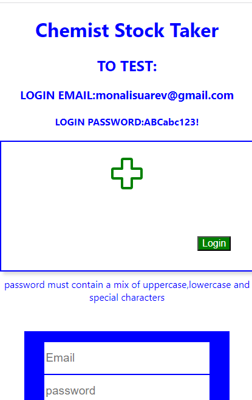My first fullstack app. A drugstore inventory app made to track expired drugs,this version is mainly for the public to test. Then I can add some other features like a signup if neededed. The application warns dealers when the expiry date is near to prioritize sales.
Tech Used : MongoDB, Express.js, React.js, Node.js
Geofactual API
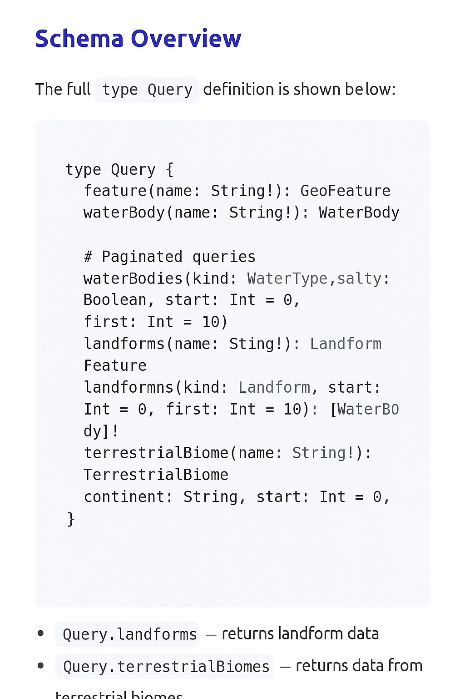The Geofactual GraphQL API provides read-only access to verified geographic data — including information on landforms, water bodies, and terrestrial biomes across the world. Developers can use it to improve their consumption of the GraphQL API. All datasets are compiled from established, publicly available reliable sources, ensuring reliability and accuracy.
Tech Used : MongoDB, Express.js, APollo Server, GraphQL
Wildcat

wildcat is a small Unix-style command-line tool written in Go. It behaves like cat, reading from files or standard input and writing to standard output. The project is intentionally minimal to improve my understanding of POSIX-style I/O, streams, and command-line behavior. Install and tell me how you feel about it.
Tech Used : Golang
Polynomial Evaluator
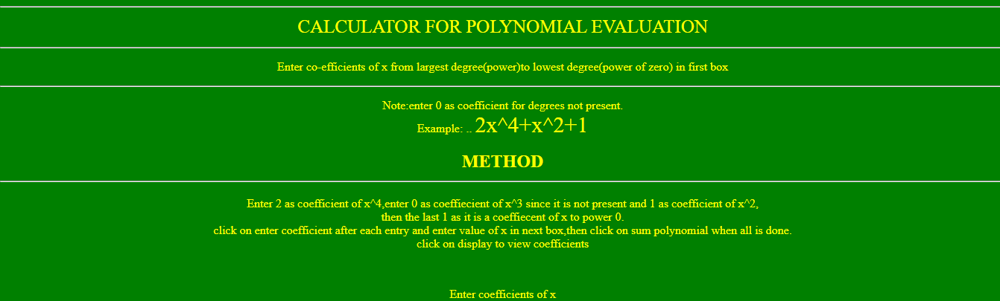A web app for evaluating polynomials.Built on Horner's algorithm. It is one app where I implemented tests using Jest and JSDOM for window. I also implemented CI/CD using GitHub actions.
Tech Used : HTML, CSS, JavaScript, JEST, JSDOM
Stimutter
A lightweight state management library for JS & React in its early development stage .
Tech Used: Node.js, JavaScript, NPM
Villacast Tv
A Video Streaming application. Think YouTube, however this one is still undergoing growth. Built using Node.js streams. This is one application I started builfing to test my understanding of streams, and I intend it to be bigger.
Tech Used: Node.js, JavaScript, HTML, CSS
Job Application Tracker
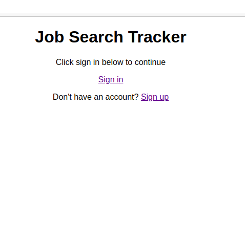A fullstack application to track jobs applied for and stage in negotiations. It was built on React.js, Django, AWS(EC2 AND RDS), NGINX. This was one project that cemented my Knowledge of cloud virtual server management and configuration and SSH remote server management, also further opened my eyes to SSL/TLS encryption. Job seekers can use it to keep track of jobs they applied for and what stage they are in the discussion process.
Tech used : React.js, Django, AWS(EC2 and RDS(PostgreSQL)), NGINX, supervisor, Django REST Framework
First EC2 Config
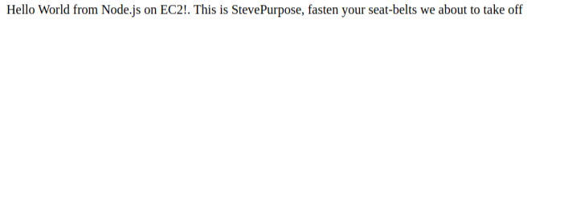This was the project I used to learn what managing virtual servers and configuring them looks like. The role of process managers and SSL encryption.
Tech Used : Node.js, AWS(EC2), NGINX, PM2
Expense Tracker
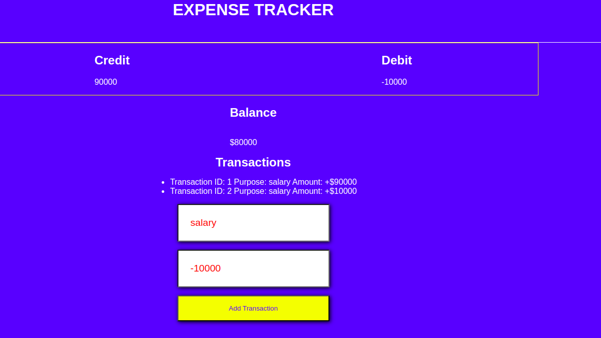An app I built to practise my deployment of static sites using GitHub Actions to AWS-S3. This further cemented my knowledge of GitHub Actions and AWS-S3.
Tech Used: HTML, CSS, JavaScript, AWS-S3
The Cook App
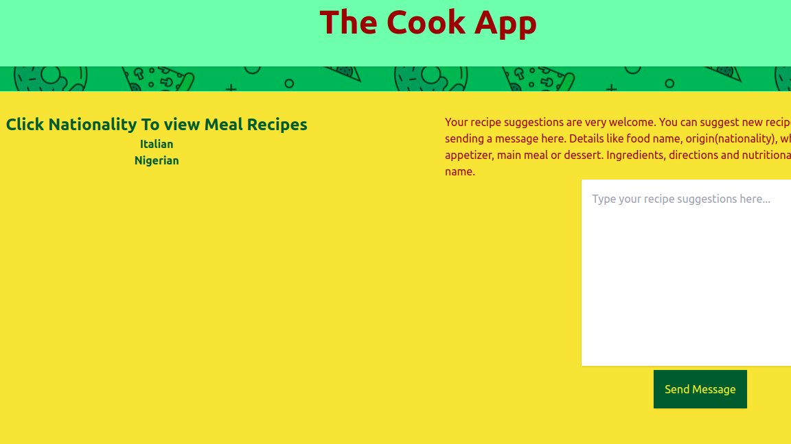A fullstack application where meals and their recipes are shared. Cooks can come get ideas from here. Everybody is welcome to share.
Tech Used: React.js, FastAPI, TailwindCss, MongoDB
stevent-management
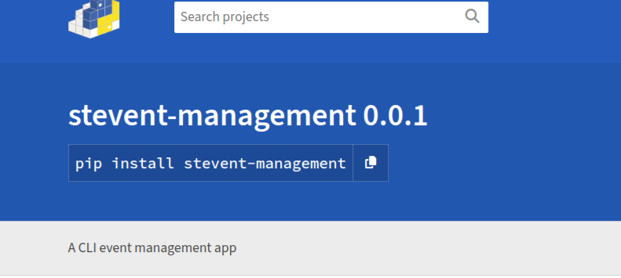A command line interface application where events can be managed from. When thinking CLI applications, send commands through the command-line and they activate. Database Managers will find this sort of app useful. Install as package.
Tech used: Pydantic Python, Typer Python, MongoDB, Poetry
Word Counter
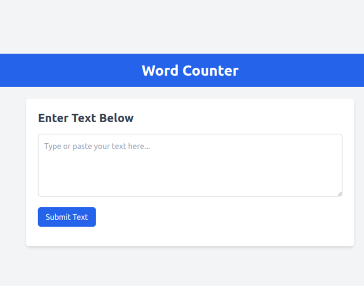A word and character text counter. Built to solely demonstrate my understanding of deployment of static websites to AWS-S3.
Tech Used : HTML, TailwindCss, JavaScript, AWS-S3
Docker container Manager
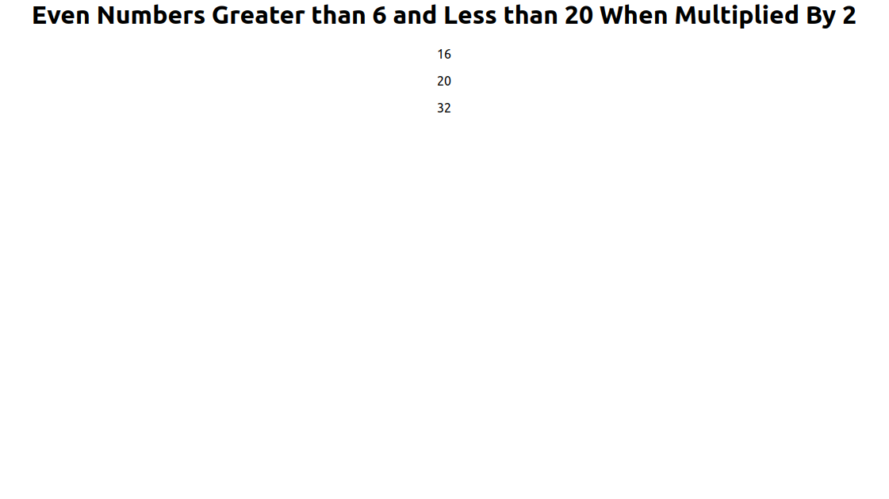An app built to demonstate my use of Docker rather than to show my prowess in React.js or Express.js. NGINX is used to serve static files and act as reverse proxy.Deployed on Render.
Tech Used : React.js, Docker, NGINX, Express.js
shopping cart
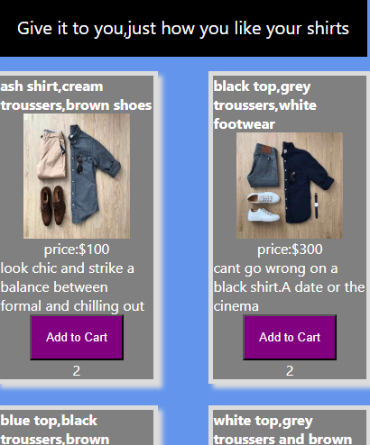My first React.js app. An Ecommerce frontend display app used to test my understanding of the context API and useReducer for global state management.
Tech Used :React js, CSS, Phosphor-react
Boxing Rounds Timer
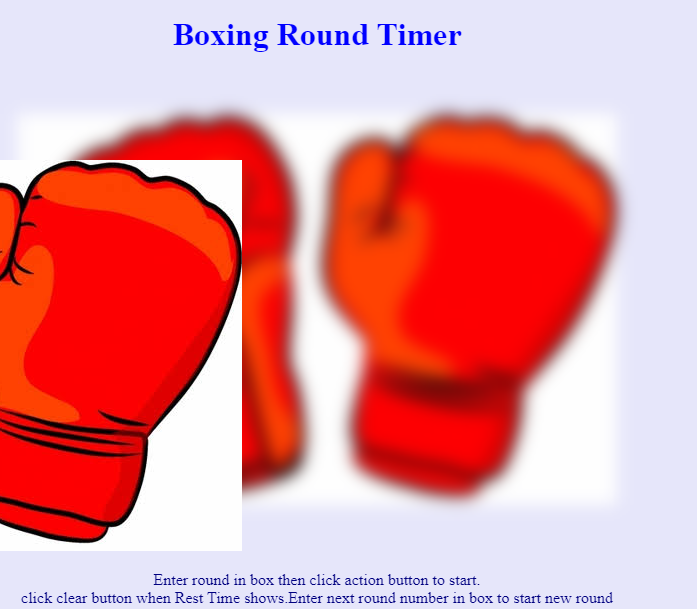An app used to time a boxing fight round of 3 mins each. Equipped with start and end bell signals.
Tech Used : HTML, CSS, JavaScript
Figure Checker
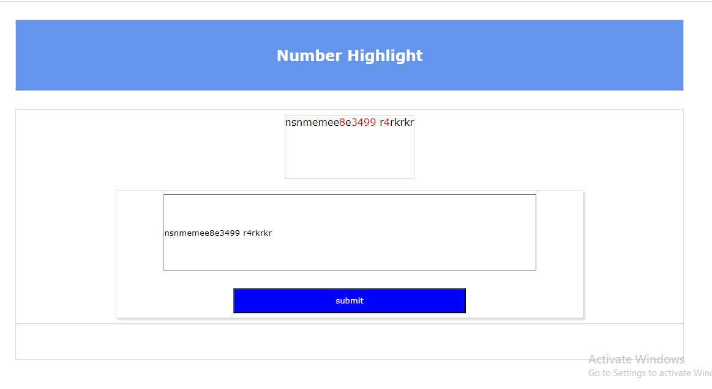Used to highlight numbers in a text. Those who deal with data and statistics will find this useful.Built with Regex.
Tech used : HTML, CSS, JavaScript
Bitcoin price checker
Built on an API to track price of Bitcoin relative to Euro, Pounds and Dollar.
Tech used : HTML, CSS, JavaScript
Game coin counter
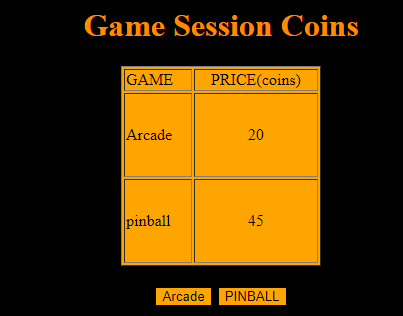An app that keeps track of the amount in coins which we exhaust per game play and reads a gameover when we drop below 0.
Tech Used : HTML, CSS, JavaScript